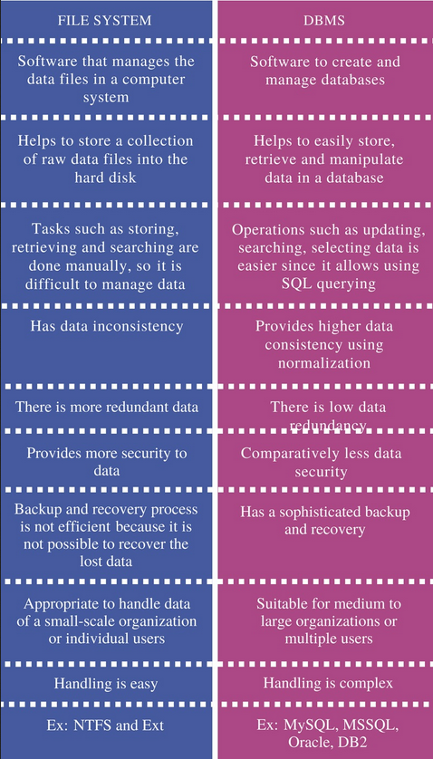
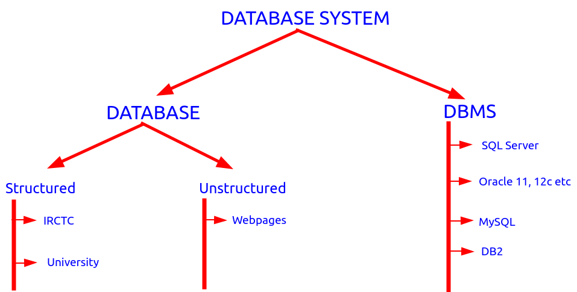
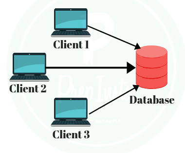
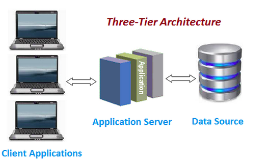
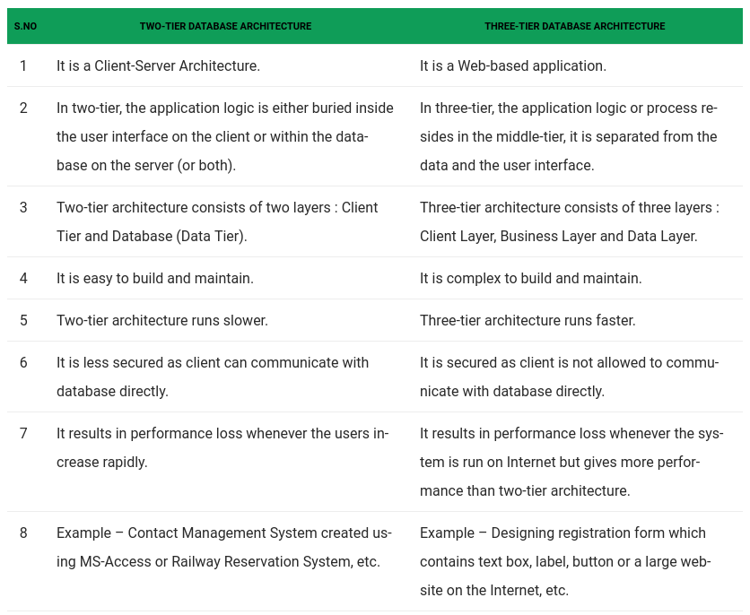
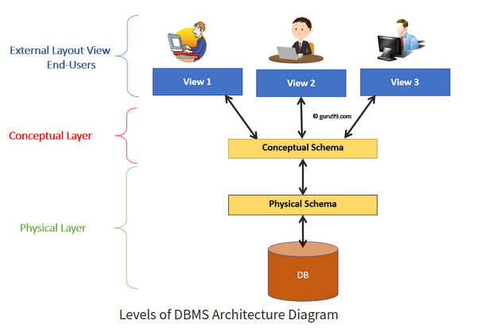
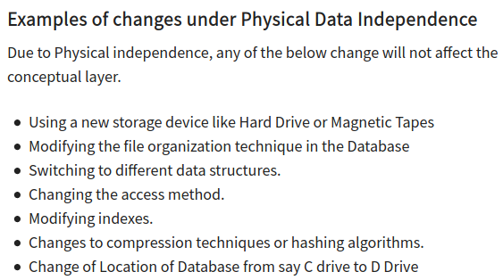
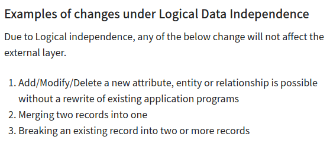

Introduction
sqlcmd -S localhost -U SA -P <Pass>
In starting we use the file system but as we moving to client server architecture(data accessible to many) we start using DBMS.
File System Vs DBMS

So seeing this advantage of DBMS we started using the database system.
~~~~~~~~~~~~~~~~~~~~~~~~~~~~~~~~~

Que: What is database?
Ans: It's a collection of related data.
~~~~~~~~~~~~~~~~~~~~~~~~~~~~~~~~~
2 Tier Architecture

In two-tier, the application logic is either buried inside the User Interface on the client or within the database on the server(or both). With two-tier client/server architectures, the user system interface is usually located in the user's dektop environment and the database mangement services are usually in a server that is a more powerful machine that services many clients.
For Ex: When we visit bank then employess are connected directly to local database. Or when we book train tickets from station.
3 Tier Architecture

In three-tier, the application logic or process lives in the middle-tier, it is separated from the data and the user interface. Three-tier systems are more scalable, robust and flexible. In addition, they can integrate data from multiple sources. In the three-tier architecture, a middle tier was added between the user system interface client environment and the database management server environment.
For Ex: The apps and websites we use nowadays are based on this architecture

~~~~~~~~~~~~~~~~~~~~~~~~~~~~~~~~~
Que: What is schema?
Ans: Schema is the logical representation of the database. For Ex: In RDBMS data is logically represented in form of table.
Three Level of Abstraction / Three Schema Architecture

This framework is used to describe the structure of a specific database system. The three schema architecture is also used to separate the user applications and physical database.
> Internal/Physical Level
• The internal level has an internal schema which describes the physical storage structure of the database.
• The internal schema is also known as a physical schema.
• It uses the physical data model. It is used to define that how the data will be stored in a block.
• The physical level is used to describe complex low-level data structures in detail.
> Conceptual Level
• The conceptual schema describes the design of a database at the conceptual level. Conceptual level is also known as logical level.
• The conceptual schema describes the structure of the whole database.
• The conceptual level describes what data are to be stored in the database and also describes what relationship exist among these data.
• In the conceptual level, internal details such as an implementation of the data structure are hidden.
• Programmers and database admin work at this level.
> External Level
• At the external level, a database contains several schemas that sometimes called as subschema. The subschema is used to describe the different view of the database.
• An external schema is also known as view schema.
• Each view schema describes the database part that a particular user group is interested and hides the remaining database from that user group.
• The view schema describes the end user interaction with database system.
In above diagram we saw the framework used for database. On of the biggest advatage of this framework is data independence.
Data Independence / Data Abstraction
Data Independence is defined as a property of DBMS that helps you to change the Database schema at one level of a database system without requiring to change the schema at the next higher level.
Type of Data Independence
1. Physical Data Independence
Physical data independence helps you to separate conceptual levels from the internal/physical levels. It allows you to provide a logical description of the database without the need to specify physical structures.
With Physical independence, you can easily change the physical storage or device with no effect on the conceptual schema. Any change done would be absorbed by the mapping between the conceptual and internal levels.

2. Logical Data Independence
Logical data independence is the ability to change the conceptual schema without changing external views and external API or program.
Any changes made will be absorbed by the mapping between external and conceptual levels.
